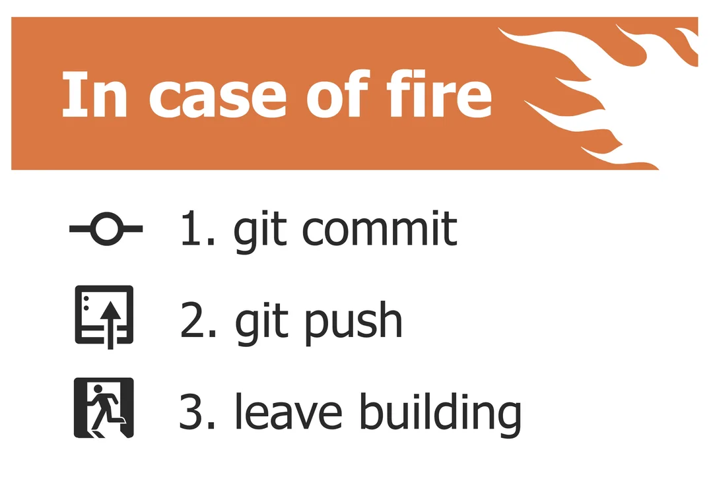
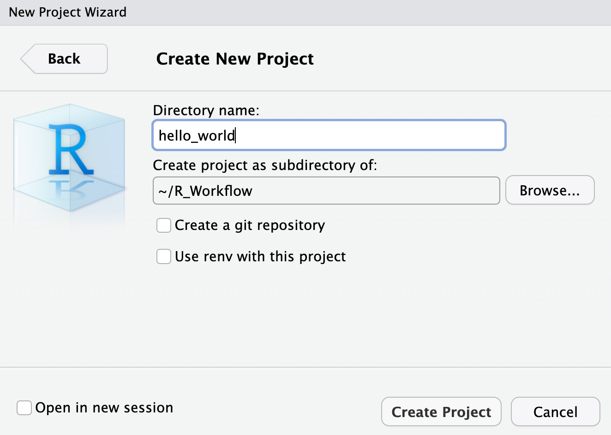
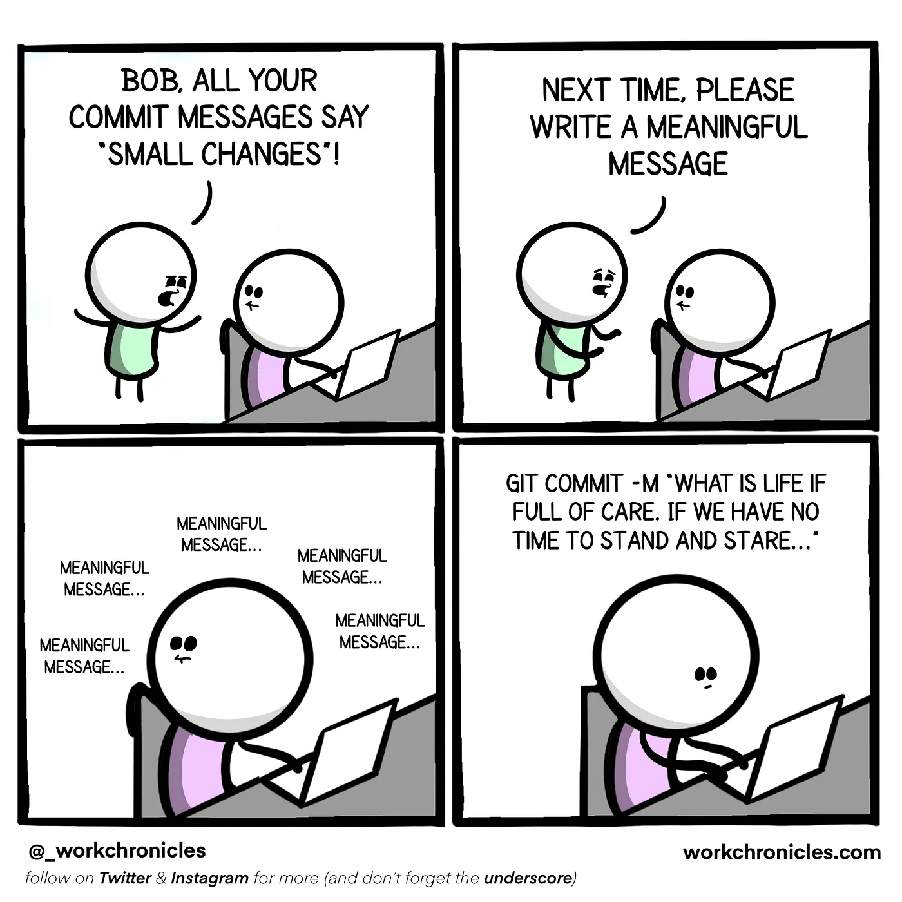
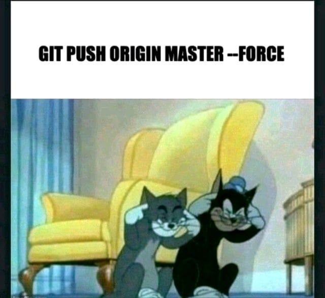
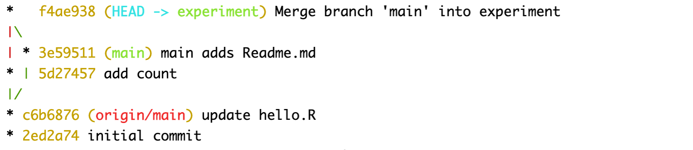
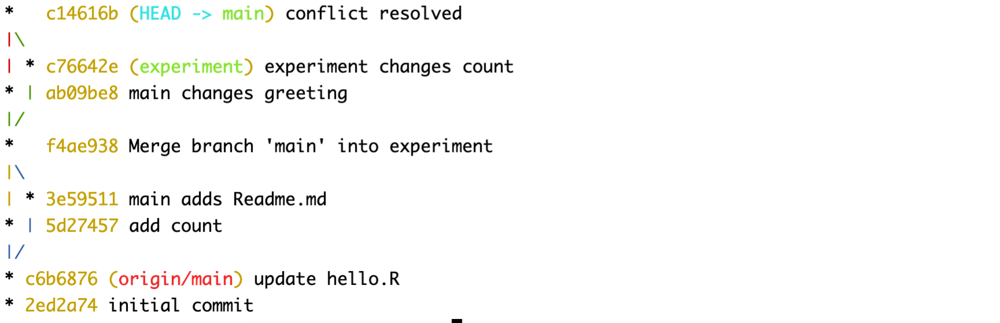
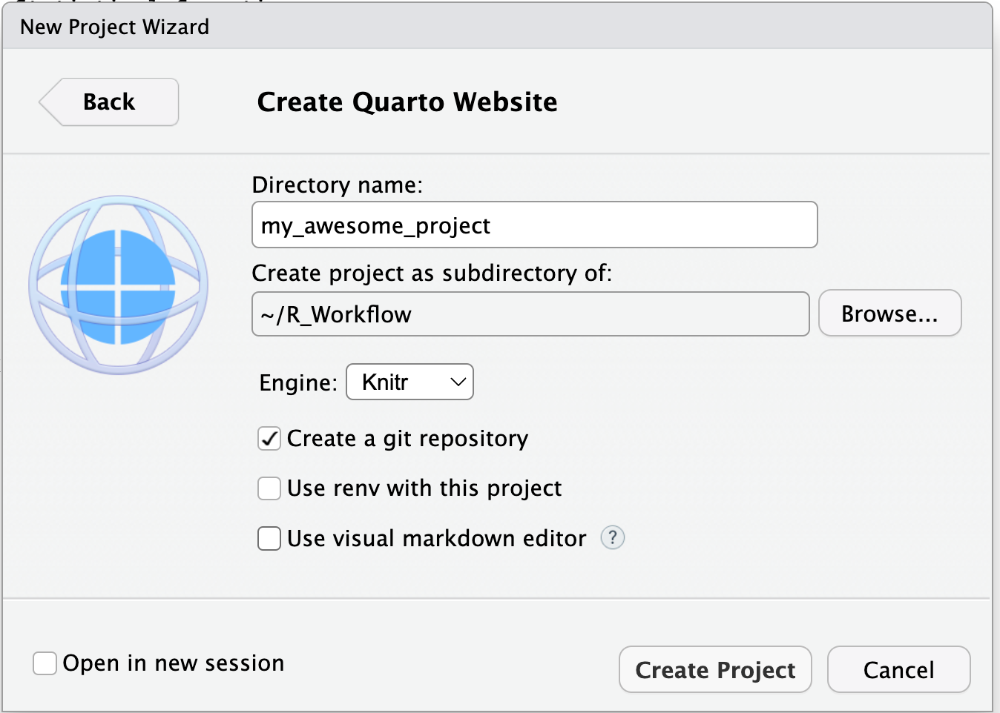
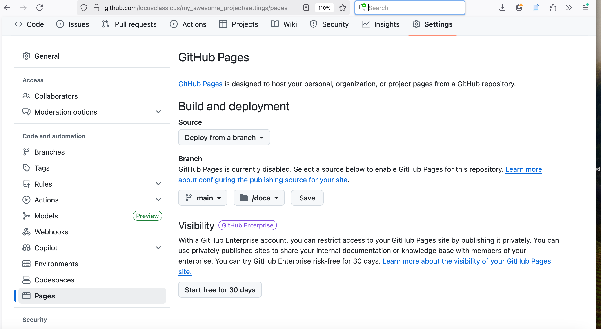

git --version14 Контроль версий с Git
14.1 Зачем нужен контроль версий?
Контроль версий — это система, которая отслеживает изменения в файлах и папках проекта. Благодаря Git вы сможете:
- Экспериментировать: пробовать разные методы анализа, не боясь сломать рабочий код.
- Возвращаться назад: иметь доступ к предыдущим версиям кода или данных.
- Сотрудничать: работать над одним проектом вместе с коллегами, избегая потери изменений.
- Документировать: создавать “снимки” вашего исследования и видеть эволюцию проекта.

14.2 GiHub Pages
GitHub Pages — это бесплатный сервис от GitHub, который позволяет автоматически публиковать сайт прямо из репозитория. Таким образом, вы можете:
- Легко делиться вашими результатами, интерактивными отчетами или портфолио через интернет.
- Автоматически публиковать обновления сайта каждый раз, когда вносите изменения в репозиторий.
- Представлять свой проект не только как код и данные, но и как удобный сайт с визуализацией, инструкциями, презентациями и т.д.
14.3 1. Установка и настройка Git
14.3.1 1.1. Создание аккаунт на GitHub
- Перейдите на github.com.
- Зарегистрируйтесь.
- Заполните профиль.
14.3.2 1.2. Установка Git
- Скачайте установщик: git-scm.com/downloads.
- Запустите установку, для начинающих — оставьте все параметры по умолчанию.
- Перезагрузите компьютер после установки.
Проверьте, что всё работает:
Откройте терминал (Git Bash на Windows, Terminal на Mac/Linux) и напишите:
Если вы увидите что-то вроде git version 2.39.3 — установка прошла успешно.
14.3.3 1.3. Первичная настройка Git
В терминале задайте себя как автора коммитов:
git config --global user.name "Имя Фамилия"
git config --global user.email "ваш_email@example.com"
git config --global init.defaultBranch main В современных проектах ветка по-умолчанию называется main (раньше была master). Это стандарт.
Посмотреть текущие настройки (надо прощелкать до конца или нажать q):
git config --list14.3.4 1.4. Настройка безопасного доступа (SSH-ключ)
SSH-ключ позволяет связывать ваш компьютер и аккаунт на GitHub безопасно, без постоянного ввода пароля.
В RStudio ключ добавляется через
Tools→Global Options→Git/SVN→Create RSA Key.Добавьте ключ на GitHub:
- Профиль →
Settings→SSH and GPG keys→New SSH key - Вставьте ключ и придумайте название (например, “RStudio”)
- Сохраните.
- Профиль →
Проверьте, что всё работает:
ssh -T git@github.comДолжно появиться приветствие с вашим логином.
В RStudio: Tools → Global Options → Git/SVN.
- Проверьте, чтобы путь к git был определён автоматически
- Включите “Enable version control interface for RStudio projects”.
14.3.5 1.5. Контроль ⭐
Свяжите RStudio с вашим аккаунтом на GitHub и перезапустите сессию.
14.4 2. Проект под контролем версий
Создать проект под контролем версий можно двумя способами:
- Клонировать репозиторий с GitHub.
- Инициализировать новый git-проект в существующей папке — то есть подключить Git к папке, где уже есть ваши файлы (например, папка с вашим текущим проектом).
Лучше выбирать для инициализации именно папку проекта, так как тогда в инструментах вроде RStudio появится удобный интерфейс для работы с Git (история изменений, коммиты, переключение веток и т.д.).
14.4.1 2.1. Клонирование c GitHub
На GitHub:
- Нажмите
+→New repository - Дайте имя (например,
my-awesome-project) - Кратко опишите проект: «Итоговый проект ЦМГН».
- Совет: выберите
Public, если проект открытый, илиPrivate(тогда понадобятся приглашения для коллег). - Добавьте
README.mdи.gitignore(выберите шаблон для R). - Добавьте лицензию (например, MIT).
- Нажмите
Create repository.
В RStudio:
1. File → New Project → Version Control → Git
2. Вставьте SSH-URL из GitHub (git@github.com:вашлогин/my-project.git)
3. Выберите папку, где окажется проект
4. Нажмите Create Project.
Отлично! Вы только что клонировали репозиторий с GitHub на свой компьютер.
Клонировать (clone) — значит сделать копию удаленного репозитория. Эта копия не только включает все файлы проекта, но и всю историю изменений (коммиты, ветки и т.д.), так что вы получаете полный двойник репозитория. Вы сможете получать новые изменения с GitHub (pull), отправлять свои (push), вести командную работу.
Клонировать не только свои репозитории, но и любые чужие, которые разрешают чтение (например, большинство публичных репозиториев на GitHub). Так часто делают, чтобы поучаствовать в разработке Open Source проектов или попробовать что-то у себя локально.
Мы только клонировали через интерфейс RStudio, но то же самое можно сделать и с помощью командной строки:
git clone https://github.com/user_name/project_name.git # ваша ссылка14.4.2 2.2. Инициализация в локальной папке
В RStudio создайте новый проект (
New Directory→New Project).Откройте терминал и выполните:
git init
git add .
git commit -m "initial commit"Команда git init создаёт в текущей папке новый git-репозиторий. Теперь git будет отслеживать изменения в этом каталоге.

Команда git add . добавляет все файлы и папки из текущего каталога (и вложенных) в индекс (stage area), то есть отмечает их для следующего коммита.
На заметку
Исключение будет сделано для файлов, перечисленных в .gitignore. Вы можете отредактировать содержимое этого файла, например, прописав большие файлы с данными. На MacOs стоит добавить в исключения .DS_Store.
Команда git commit -m "initial commit" фиксирует (сохраняет) все добавленные изменения в репозитории как новый коммит. Обычно для первого коммита пишут сообщение “Initial commit”.
- Добавьте удалённый репозиторий (его надо создать):
git remote add origin git@github.com:user_name/project_name.git # замените ссылку!
git branch -M main
git push -u origin mainКоманда git remote add origin добавляет удаленный репозиторий с именем origin к вашему локальному git-репозиторию.
Команда git branch -M main переименовывает текущую ветку в main.
Команда git push -u origin main отправляет (push) вашу ветку main на удалённый репозиторий origin. Параметр -u (он же --set-upstream) устанавливает связь между вашей локальной веткой main и удаленной веткой, чтобы в дальнейшем можно было просто использовать git push или git pull без дополнительных параметров.
14.4.3 2.3. Контроль ⭐
- Создайте проект под контролем версий (любым способом).
- Отредактируйте
.gitignore, добавив в него*.Rproj. - Создайте пустой файл (в терминале:
touch hello.R). - Добавьте
hello.Rв индекс, используяgit add .. Если исключение прописано правильно, то файл с расширением.Rprojбудет проигнорирован. Проверьте это перед коммитом, используяgit status. - Закоммитьте и запушьте изменения. Убедитесь, что файл появился в удаленном репозитории.
14.5 3. Базовый рабочий цикл Git
Дочитайте раздел до конца, прежде чем переходить к упражнениям.
14.5.1 3.1. Проверить статус
git status14.5.2 3.2. Добавить изменения в stage
git add hello.R # добавить один файл
git add . # добавить всё изменённое
git add scripts/*.R # добавить все файлы в scripts/14.5.3 3.3. Закоммитить изменения
Коммиты принято писать в императиве и по-английски. Например:
git commit -m "add Readme.md"Хорошее сообщение коммита выглядит так:
- 1 строка — кратко.
- Пустая строка.
- Тело коммита: подробнее о том, что изменено и зачем.

14.5.4 3.4. Отправить коммиты на GitHub.
git push 14.5.5 3.5. Получить изменения с GitHub
git pull14.5.6 3.6. Контроль ⭐
Внесите изменения в файл hello.R в удаленном репозитории (в ветке main), закоммитьте изменения, затем выполните pull.
14.6 4. История изменений
14.6.1 4.1. Посмотреть историю изменений
Попробуйте в терминале:
git log
git log --oneline
git blame hello.RКоманда git log возвращает историю коммитов всего репозитория или файла (какие коммиты были, их описания, авторы, время). Можно осуществлять поиск по автору, времени коммита и т.п. (подробнее здесь и здесь).
git log --oneline --max-count=1
git log --oneline --since="5 minutes ago"
git log --oneline --until="5 minutes ago"
git log --oneline --author="your_name"Команда git blame возвращает историю по каждой строке файла: кто, когда и каким коммитом изменил эту строку.
14.6.2 4.2. Контроль ⭐
Проверьте историю изменений проекта (и отдельно файла hello.R). Отберите изменения за последние 5 минут или час.
14.7 5. Отмена изменений
14.7.1 5.1. Отмена проиндексированных изменений
Внесите изменения в файл hello.R (локально).
Проверьте статус. Выполните git add . и снова проверьте статус.
Команда restore с флагом --staged очищает индекс (подробнее).
git restore --staged hello.RТа же команда без флага восстанавливает файл до состояния последнего коммита.
git restore hello.RПосле выполнений этой команды git status должен сообщить, что изменений нет.
14.7.2 5.2. Отмена коммитов
Снова внесите изменения в hello.R, проиндексируйте и закоммитьте. Проверьте статус (вы увидите сообщение о том, что ваша ветка опережает ‘origin/main’ на 1 коммит).
git commit -m "oops, wrong commit"
git statusПосмотреть разницу:
git diff origin/main..mainВместо отправки изменений в удаленный репозиторий, мы их отменим. Команда ниже откатывает коммит, но изменения попадают в staged.
git reset --soft HEAD~1Вернуть изменения в unstaged (в рабочее дерево, но не в staged):
git reset --mixed HEAD~1Также можно полностью выкинуть изменения последнего коммита (безвозвратно!):
git reset --hard HEAD~1После этого все изменения, которые были в коммите, исчезают.
В результате отмены нескольких коммитов локальная ветка может отстать от удаленной. Чтобы снова “догнать” удалённую ветку (получить последние изменения), выполните git pull. Команда подтянет изменения, и локальная ветка main станет равна origin/main.
Если надо оставить старую версию (например, удалить последние 3 коммита на сервере), то выполните git push --force. Будьте осторожны! Это действие перепишет ветку main на сервере и может навредить другим разработчикам.

14.7.3 5.3. Контроль ⭐
- Внесите изменения в файл. Проиндексируйте их, потом отмените индексацию.
- Внесите изменения в файл. Проиндексируйте и закоммитьте, потом откатите коммит (попробуйте разные способы).
- Проверьте и осмыслите историю изменений после
git push --force.
14.8 6. Ветки
14.8.1 6.1. Создание новой ветки
Создадим новую ветку (здесь -c – это сокращение для --create, то есть создать новую ветку с именем experiment и сразу на неё переключиться):
git switch -c "experiment"Внесите изменения в файл, проиндексируйте и закоммитьте (например, git commit -m "add count").
Теперь у нас есть новая ветка под названием experiment с новым коммитом.
14.8.2 6.2. Переключение между ветками
Переключимся обратно на ветку main (все следы измнений в файле при этом пропадут: они сделаны в другой ветке).
git switch main
git switch experiment14.8.3 6.3. Просмотр различий
git show 789ea9c # хеш коммита
git show HEAD # то же самоеТеперь вернемся в главную ветку и внесем изменения. Например, создадим новый файл, проиндексируем и закоммитим его.
touch Readme.mdТеперь у нас есть две расходящиеся ветки в репозитории. Используем команду log для просмотра веток и их расхождения. Используем флаг --all, чтобы увидеть изменения по всем веткам.
git log --all --graph
git log --graph --all --onelineОпция --graph добавляет простое дерево коммитов, представленное в виде простых текстовых линий. Вы должны видеть обе ветки (experiment и main), причём ветка main помечена как HEAD, что означает, что она является текущей.
14.8.4 6.4. Слияние веток
Слияние переносит изменения из двух веток в одну. Вернемся к ветке experiment и сольем ее с main.
git switch experiment
git merge main
git log --all --graph --oneline
Что это означает?
HEAD -> experiment— мы находимся в веткеexperiment.f4ae938— коммитmerge, в которомmainбыл влит вexperiment.3e59511— отдельный коммит в main: “add Readme.md”.5d27457— коммит с изменениями “add count” в веткеexperiment.
После слияния ветка experiment содержит оба изменения: и из main (“main adds Readme.md”), и свое (“add count”).
Чтобы изменения были появились в main, нужно выполнить следующие команды:
git switch main
git merge experimentТеперь main тоже будет содержать оба изменения.
14.8.5 6.5. Создание конфликта
Если в обеих ветках был изменен один и тот же часть файл, Git может не справиться с автоматическим слиянием изменений (источник). В этом случае Git сообщит о конфликте и попросит разрешить его вручную. Далее мы смоделируем конфликт, а затем научимся его разрешать.
Допустим, после слияния в обеих ветках у нас есть файл hello.R:
print("Hello, World!")[1] "Hello, World!"x <- 2+2Переключаемся в main, правим файл, например:
print("Hello from main!")
x <- 2+2Сохраняем, коммитим. После этого переключаемся в experiment, делаем другое изменение, например:
print("Hello, World!")
x <- 2+3Тоже сохраняем, коммитим. После этого пытаемся влить experiment в main:
git switch main
git merge experimentПолучаем сообщение о конфликте: “Automatic merge failed; fix conflicts and then commit the result.” При этом откроется файл с конфликтом:
<<<<<<< HEAD
print("Hello from main!")
x <- "2+2"
=======
print("Hello, World!")
x <- 2 + 2
>>>>>>> experimentЗдесь HEAD — это то, что в main, а нижняя часть — то, что в experiment.
14.8.6 6.6. Разрешение конфликта
Исправляем файл вручную и говорим git, что конфликт решен.
git add .
git commit -m "conflict resolved"
# проверяем
git log --graph --onelineВетки теперь “разошлись”: main лидирует, experiment “отстает” (она не содержит merge-коммит). (Подумайте, как снова выровнять две ветки).

14.8.7 6.7. Контроль ⭐
- Создайте новый репозиторий или продолжите работу в существующем.
- Создайте новую ветку с именем
featureи переключитесь на неё. - Внесите изменения в любой файл (например, создайте файл
feature.txtи добавьте в него текст), проиндексируйте изменения и создайте коммит с сообщением"add feature.txt". - Переключитесь обратно на ветку
mainи создайте другой файл (например,main.txt). Зафиксируйте и закоммитьте изменения. - Посмотрите историю коммитов в виде графа. Сколько сейчас у вас расходящихся веток? Как называются последние коммиты в каждой из них?
- Переключитесь снова на ветку
featureи влейте в нее изменения из веткиmain. Посмотрите граф ветвления после слияния.
- Смоделируйте конфликт: в ветке
mainизмените первую строку файлаconflict.txt(создайте его, если его нет). В веткеfeatureизмените ту же строку файла на другой текст. - Попробуйте слить
featureвmain. Git покажет конфликт. - Откройте файл с конфликтом, вручную устраните конфликт и завершите слияние.
- Посмотрите и осмыслите текущий граф коммитов.
14.9 7. Проект Quarto
Создайте проект Quarto под контролем версий. В меню идем File -> New Project -> New Directory -> Quarto Website. Поставьте галочку, чтобы проект был под контролем версий (это равноценно команде git init).

У вашего сайта пока всего две страницы, About и Home. Загляните в файл _quarto.yml, чтобы в этом убедиться. Также отредактируйте файл _quarto.yml, указав путь для рендеринга html-файлов.
project:
type: website
# вот эту строчку надо дописать
output-dir: docsЧтобы получить html, надо выполнить команду:
library(quarto)
quarto::quarto_render()После выполнения команды загляните в docs, чтобы убедить, что там лежат файлы html. Вы можете открыть их в любом браузере.
Отредактируйте файлы, внесите другие необходимые изменения, после чего закоммитьте и запушьте сайт.
На странице репозитория на GitHub включите Pages, указав, что наш сайт будет рендериться из папки docs.

14.10 8. Полезные ресурсы
- Pro Git Book на русском
- GitHub Skills: бесплатные интерактивные уроки
- Happy Git with R — для пользователей R
- GitHowTo - очень подробное и понятное введение в git